New Senior School Biology Practical Activity & Work Book Two
Chapter
11
POLLINATION IN PLANTS
Notable Concepts
Self pollination
Cross pollination
Pollinating agents
Insect pollination and wind pollination
fig11.1 Pollen tube moving intothe ovary for fertilization
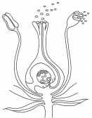
fig11.2 Wind pollination
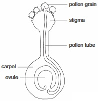
Pollination is the transfer of pollen grains from anthers to stigmas. Pollination is the first step in the process of sexual reproduction in flowering plants. It is followed by fertilization and development of the zygote.
TYPES OF POLLINATION
Pollination in plants are of two types: Self pollination andCross pollination
SELF POLLINATION
Self pollination is the transfer of pollen grains from anthers to a receptive stigma of the same flowers on the same plants. Resultant offspring through self pollination show very little genetic variation. Prolonged self pollination among individual species results to weakened individuals.
FEATURES OF FLOWERING PLANTTHAT FAVOUR SELF POLLINATION
There are cases in flowering plants where self pollination can occur
1. In Bisexual flowers: flowers that contain both sexes (i.e. stamens and carpels) in same flower.
2. In monoecious plants with unisexual flowers (monoecious plants are plants that contain male and female flowers on the same plant)
Also Homogamy - Maturation of stamen and carpels at the same time in bisexual flowers and Cleistogamy - Bisexual flowers which never open but have their pollen grains discharged directly into the receptive stigmas favour self pollination.
CROSS POLLINATION
Cross pollination is the transfer of matured pollen grain from the anthers of one plant to stigma of another plant of the same or closely related species. Cross pollination is risky and wasteful. Cross pollination brings about stronger genetic variability with well adapted and healthy offspring.
FEATURES IN FLOWERING PLANTS THAT FAVOUR CROSS POLLINATION
1. Unisexuality: unisexuality promotes cross pollination especially in dioecious plants like pawpaw. Here only cross pollination can occur as the male and female flowers are borne on separate plants. Even in monoecious plants with unisexuality, self pollination can be hindered by Positioning of female flowers above the male flowers below and by the ripening or maturation of male and female flowers at different times.
2. Dichogamy: dichogamy is condition in bisexual flowers whereby the stamens and carpels mature at different times. Such condition usually prevents self pollination. Such flowers function as male flowers when only the stamens are matured and as females when only the carpels are matured. We can identify two types of dichogamous conditions in flowers:
Protandry: In this condition the stamens of the flower mature earlier than the carpels of the same flower or of other flowers of the same plant. The stigmas only become receptive when the pollen in stamen has been completely shed off. Okra, Sunflower and Cotton are examples of such plants where this occurs.
Protogyny: Here the carpels of the flower mature earlier than its stamens and stamens of other flowers of the same plant. Examples of such plants are Figs and certain Palms.
3. Self-incompatibility: self-incompatibility is an inherited condition in some species of bisexual flowers. In such condition stamens and carpels borne by the flowers which mature at the same time will have pollen grains which fall on the stigma of the same flower or flowers of the same plant unable to germinate. Examples of such plants are Tea and Passion flower.
fig11.3 female pawpaw flower
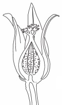
fig11.4: male pawpaw flower
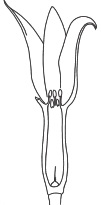
fig11.5: Zea mays Tassel (Male Inflorescence)
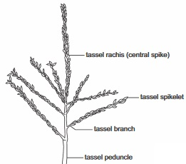
AGENTS OF POLLINATION
Pollinating agents includes;
Wind
Water
Insects
Other animals such as Squirrels, Birds, Bats, Snails etc
Among other pollinating agents, wind and insects are most common. Flower do show characteristic features in line with its agent of pollination.
INSECT POLLINATION
Insects bring about pollination in the cause of searching for food and nectar. Common insects that are agents of pollination includes; Butterflies, Moths, Bees, Wasps, Beetles and Ants. Insect pollinated flowers are called Entomophilous flowers.
CHARACTERISTIC OF INSECT POLLINATED FLOWERS (ENTOMOPHILOUS FLOWERS)
Large and conspicuous flowers, large inflorescence in cases of small flowers. Examples are Sunflower, Clitoria etc
fig11.6: Sun flower (insect pollinated flower)
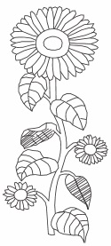
fig11.7: Insect pollination
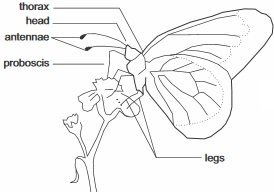
Large and brightly coloured petals or petal-like structures. This makes them attract insects example Banana.
The flowers are usually bisexual.
Scented and nectar containing flowers. Nocturnal insects are attracted by the scent in the flowers while the nectar is food to insects.
Elaborate structural modification that suits the insect pollinators.
WIND POLLINATION
Wind brings about the pollination of several plants. Examples are grasses which includes cereal plants, sedges and palm. Wind pollination is a wasteful pollination process as only a small portion of millions of produced pollen grain in a plant eventually gets to a receptive stigma.
CHARACTERISTIC OF WIND POLLINATED FLOWERS (ANEMOPHILOUS FLOWER)
Individual small and inconspicuous flowers which are borne in large inflorescence well above the leaves.
Unisexual flowers with male and female flowers found on the same plant or on separate plants with male flowers on the excess.
Pale or dull coloured sepals and petals, also for any other associated or accessory floral parts.
No scent or nectaries.
Simple flower structure, non elaborate floral parts.
The stamens and stigmas hang outside the flower, attachment of the anthers enables them to swing freely in the breeze. The stigmas are branched and feathery, they are borne on long flexible styles, thus providing a large surface area for receiving pollen grains.
Grass flowers (examples of wind pollinated flowers) fig11.8A
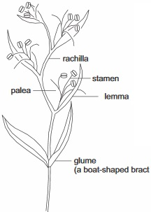
fig11.8B:
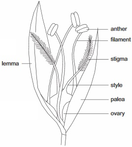
General Questions On Pollination
1. The process by which matured pollen grains are transferred from anthers to receptive stigmas in flowering plants is called
2. The resultant offsprings of
pollination show little genetic variation which can lead to weakened individual after prolonged process over many generations.
3. When mature pollen grains from the anther of a flower fall on the stigma of the same flower or that of another flower of the same plant we say
pollination has taken place.
4.
pollination causes the male gamete and female gamete of two different parent plants to fuse together.
5. Offsprings of greater genetic variability, healthy and better adapted in their environment are achieved through
pollination.
6. When pollen grain lands on a mature stigma of the same type of flower, it germinates to form a
7. In a unisexual flower of a dioecious plant, what type of pollination can occur there?
8. Homogamy and cleistogamy bring about
pollination.
9. Dichogamy and self incompatibility favours
pollination.
10. Which of the following flowers is wind pollinated (a) Rattle box (b) Maize flower (c) Sunflower?
11. Elaborate structure modifications, large and bright colouration and nectaries are characteristics that are found in
pollinated flowers.
12. Which of these characteristics in flowers favour wind pollination
(a) Bisexuality (b) Scent and nectaries (c) Unisexuality (d) Large and brightly coloured petals (e) Flowers borne in large inflorescence
13. In rattle box flower, the nectar favour insect pollination but in maize flower, the inflorescences are adapted for
pollination.
14. In maize, male inflorescences usually mature before the cobs in order to prevent
15. Dull accessory floral parts are features that favour wind pollination in flowers. What agent of pollination is favoured by no scent and nectarines features
Expression Exercise
1. Why is cross pollination a wasteful process
2. Write down one advantage of cross pollination and also one advantage of self pollination
3. Write down two conditions that can hinder self pollination in a monoecious plant with unisexuality like maize
4. Why is it that only cross pollination can occur in a pawpaw plant
5. What do you understand by the following: (a) Protandry (b) Protogyny
6. (a) Write down four agents of pollination
(b) Why is pollination important in flowering plants?
7. (a) Write down four characteristic of insect pollinated flowers
(b) Write down one example of such flowers
8. (a) Write down four characteristic of wind pollinated flowers
(b) Write down one example of such flower
9. Why do you think that a bee cannot pollinate maize flower?
Practical Activities
fig11.9A
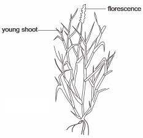
fig11.9B:
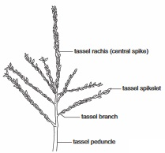
1. Study the diagram in fig 11.9A and fig 11.9B carefully (a) What agent of pollination are the flowers adapted to for their pollination
(b) State two characteristics you observed that favoured such pollinating agent
2. You are presented with two specimen flowers
Specimen A - Grass flower
Specimen B - Sunflower
Examine both flowers carefully, describe their general features. State the mode of pollination each flower is adapted to based on your observation of their physical features
3. Which of these flowers below will likely be pollinated by wind